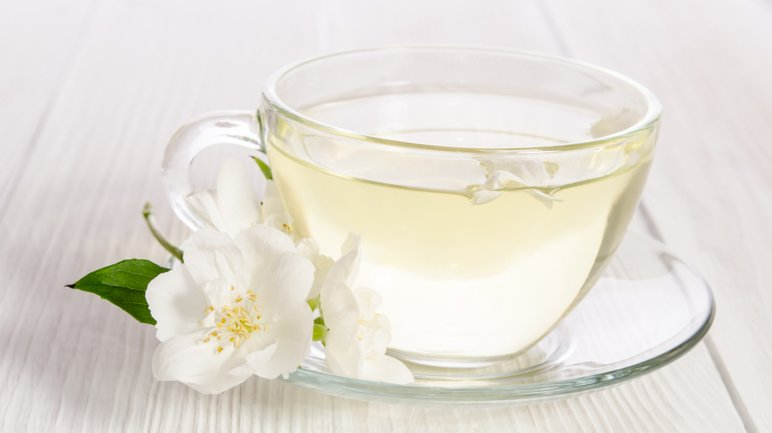

Herbaty świata
Biała herbata

Biała herbata przez wzgląd na to, że jest robiona z młodych listków, a w zasadzie z pąków, jest najmniej przetworzoną herbatą, a przez to i najzdrowszą. Zawiera bardzo dużo polifenoli i katechin, które są przeciwutleniaczami. Głównym zadaniem przeciwutleniaczy jest niszczenie wolnych rodników, a więc komórek odpowiedzialnych za stres oksydacyjny, szybsze starzenie się organizmu, a nawet rozwój nowotworów.
Katechiny pomagają utrzymać właściwy poziom cholesterolu przez co działają dobroczynnie na układ krwionośny, zapobiegając rozwojowi miażdżycy, wystąpieniu zawału serca i udaru mózgu. To nie koniec zalet białej herbaty - przeciwdziała próchnicy, stymuluje pracę mózgu (ułatwia koncentrację, poprawia pamięć i delikatnie pobudza). Biała herbata pomaga uregulować ciśnienie krwi, wzmacnia kości i stawy (jest polecana chorym na osteoporozę i zapalenie stawów).